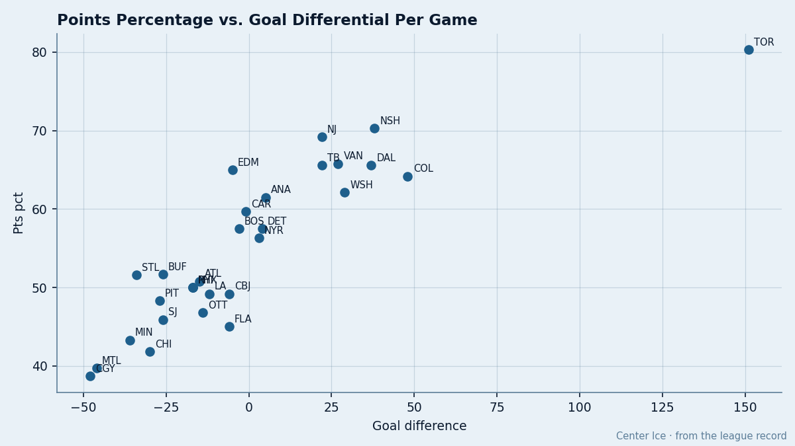

One-Goal Games: 4 Clubs Win Less Than 3 in 10 When the Margin Is One
Dallas, Edmonton and Boston win tight games at over two-thirds. Florida, Calgary, San Jose and Chicago can't win one.
 Doug ReimerAnalytics editor, ex-video coach · The Slot Report
Doug ReimerAnalytics editor, ex-video coach · The Slot Report
51.6% of the 910 games this league has played through February 21 are decided by a single goal. The spread in how often each club lands in those games, and how each performs when it does, is where the signal is.
I pulled every game where the margin was exactly 1. I computed each club's win rate in those games and compared it to its overall points percentage. The difference between the two measures whether a team is built for close hockey or built to avoid it.
No single player drives this pattern,  Garth Snow79 or otherwise. It is structural.
Garth Snow79 or otherwise. It is structural.
The participation gap
Toronto plays 16 one-goal games in 61 contests. No other club plays fewer than 22. At the other end,  Mighty Ducks of Anaheim has played 44 one-goal games, the most in the league, followed by
Mighty Ducks of Anaheim has played 44 one-goal games, the most in the league, followed by  Ottawa Senators and
Ottawa Senators and  Chicago Blackhawks at 38 each.
Chicago Blackhawks at 38 each.
A club that avoids one-goal games is usually running teams off the rink or being run off. Toronto's goal differential is +151, the widest in the league by 103 goals. They don't need to win the close ones because they rarely play them. Mighty Ducks of Anaheim is a different animal: 44 one-goal games means they are competitive in nearly three-quarters of their schedule but can't finish. Their goal differential is +5.

Who wins the tight ones
Excluding Toronto, whose 16-game sample is too small to rank, the one-goal game win rate splits the league cleanly:
Dallas sits at 71.4% (20 wins in 28 one-goal games). Edmonton is at 70.6% (24 in 34). Boston is at 68.0% (17 in 25). These three clubs win nearly 7 of every 10 close games.
Below them:  New Jersey Devils at 67.7% (21 in 31),
New Jersey Devils at 67.7% (21 in 31),  Nashville Predators at 61.8% (21 in 34),
Nashville Predators at 61.8% (21 in 34),  St. Louis Blues at 61.3% (19 in 31). Seven clubs above .600.
St. Louis Blues at 61.3% (19 in 31). Seven clubs above .600.
At the bottom:  Florida Panthers at 28.6% (10 in 35),
Florida Panthers at 28.6% (10 in 35),  Calgary Flames at 29.6% (8 in 27),
Calgary Flames at 29.6% (8 in 27),  San Jose Sharks at 32.4% (12 in 37), Chicago Blackhawks at 34.2% (13 in 38). Four clubs that lose roughly 7 of every 10 close games.
San Jose Sharks at 32.4% (12 in 37), Chicago Blackhawks at 34.2% (13 in 38). Four clubs that lose roughly 7 of every 10 close games.
The gap between close games and the table
The more useful number is the difference between a club's one-goal win percentage and its overall points percentage. A positive gap means the club wins close games at a higher rate than it earns points overall. That club is getting something from tight finishes that its other games don't provide.
 Boston Bruins carries the largest positive gap at +10.5: they win 68.0% of one-goal games but earn only 57.5% of available points overall. Boston loses badly sometimes and wins close games well, but the blowout losses in between pull the average down.
Boston Bruins carries the largest positive gap at +10.5: they win 68.0% of one-goal games but earn only 57.5% of available points overall. Boston loses badly sometimes and wins close games well, but the blowout losses in between pull the average down.
 Atlanta Thrashers at +9.9 and St. Louis Blues at +9.7 sit next.
Atlanta Thrashers at +9.9 and St. Louis Blues at +9.7 sit next.  Dallas Stars adds +5.8,
Dallas Stars adds +5.8,  Edmonton Oilers +5.6.
Edmonton Oilers +5.6.  Montreal Canadiens at +5.5 is a curiosity: they win 45.2% of close games but only earn 39.7% of points. Montreal gets more out of tight games than out of any others.
Montreal Canadiens at +5.5 is a curiosity: they win 45.2% of close games but only earn 39.7% of points. Montreal gets more out of tight games than out of any others.
On the other side, Florida Panthers carries a gap of minus 16.4. They win 28.6% of one-goal games but earn 45.0% of points. Florida loses tight games and makes it back by winning some by wide margins, but the pattern costs them. Washington sits at minus 15.2, San Jose Sharks at minus 13.5,  Carolina Hurricanes at minus 11.1, and
Carolina Hurricanes at minus 11.1, and  Philadelphia Flyers at minus 10.7. These clubs are competitive enough to be in games but not good enough to close them.
Philadelphia Flyers at minus 10.7. These clubs are competitive enough to be in games but not good enough to close them.
What it means for the race
Florida Panthers sits 9th in the East at 54 points, 7 back of  Buffalo Sabres in 8th. They play 35 one-goal games this season and win 10. If they won those games at a league-average 50%, they would sit at roughly 66 points and be in the playoff conversation. The gap between 45% points percentage and 28.6% in one-goal games is 16.4 percentage points of underperformance. That is not a stretch to close with 22 games left.
Buffalo Sabres in 8th. They play 35 one-goal games this season and win 10. If they won those games at a league-average 50%, they would sit at roughly 66 points and be in the playoff conversation. The gap between 45% points percentage and 28.6% in one-goal games is 16.4 percentage points of underperformance. That is not a stretch to close with 22 games left.
At the top, Dallas Stars and Edmonton Oilers both sit within 3 points of Nashville Predators in the West. Their one-goal game records (71.4% and 70.6%) say they can survive the games that decide seeding.  Colorado Avalanche at 53.8% and
Colorado Avalanche at 53.8% and  Washington Capitals at 46.9% cannot say the same.
Washington Capitals at 46.9% cannot say the same.
Carolina Hurricanes is the most exposed team in the East. They carry a minus 11.1 gap, a 48.6% one-goal win rate, and they hold the 5th seed on a record that includes 11 overtime wins. They are in every game and they lose more than half of them. I covered Carolina's overtime dependency earlier this week. The one-goal number confirms the problem runs past overtime: it is every game that comes down to the final goal.
Full table
| Club | GP | One-goal GP | OG wins | OG losses | OG win % | Pts % | Gap |
|---|---|---|---|---|---|---|---|
| DAL | 61 | 28 | 20 | 8 | 71.4 | 65.6 | +5.8 |
| EDM | 60 | 34 | 24 | 10 | 70.6 | 65.0 | +5.6 |
| BOS | 60 | 25 | 17 | 8 | 68.0 | 57.5 | +10.5 |
| NJ | 60 | 31 | 21 | 10 | 67.7 | 69.2 | -1.5 |
| NSH | 59 | 34 | 21 | 13 | 61.8 | 70.3 | -8.5 |
| STL | 61 | 31 | 19 | 12 | 61.3 | 51.6 | +9.7 |
| ATL | 59 | 28 | 17 | 11 | 60.7 | 50.8 | +9.9 |
| TB | 61 | 32 | 19 | 13 | 59.4 | 65.6 | -6.2 |
| VAN | 60 | 31 | 18 | 13 | 58.1 | 65.8 | -7.7 |
| NYI | 60 | 22 | 12 | 10 | 54.5 | 50.0 | +4.5 |
| COL | 60 | 26 | 14 | 12 | 53.8 | 64.2 | -10.4 |
| ANA | 61 | 44 | 23 | 21 | 52.3 | 61.5 | -9.2 |
| BUF | 59 | 33 | 17 | 16 | 51.5 | 51.7 | -0.2 |
| DET | 60 | 34 | 17 | 17 | 50.0 | 57.5 | -7.5 |
| PHX | 60 | 28 | 14 | 14 | 50.0 | 50.0 | 0.0 |
| TOR | 61 | 16 | 8 | 8 | 50.0 | 80.3 | -27.0 |
| CAR | 62 | 37 | 18 | 19 | 48.6 | 59.7 | -11.1 |
| CBJ | 60 | 31 | 15 | 16 | 48.4 | 49.2 | -0.8 |
| NYR | 64 | 31 | 15 | 16 | 48.4 | 56.3 | -7.9 |
| WSH | 62 | 32 | 15 | 17 | 46.9 | 62.1 | -15.2 |
| MTL | 63 | 31 | 14 | 17 | 45.2 | 39.7 | +5.5 |
| PIT | 60 | 31 | 14 | 17 | 45.2 | 48.3 | -3.1 |
| MIN | 60 | 30 | 13 | 17 | 43.3 | 43.3 | 0.0 |
| LA | 61 | 37 | 16 | 21 | 43.2 | 49.2 | -6.0 |
| OTT | 62 | 38 | 15 | 23 | 39.5 | 46.8 | -7.3 |
| PHI | 60 | 28 | 11 | 17 | 39.3 | 50.0 | -10.7 |
| CHI | 61 | 38 | 13 | 25 | 34.2 | 41.8 | -7.6 |
| SJ | 61 | 37 | 12 | 25 | 32.4 | 45.9 | -13.5 |
| CGY | 62 | 27 | 8 | 19 | 29.6 | 38.7 | -9.1 |
| FLA | 60 | 35 | 10 | 25 | 28.6 | 45.0 | -16.4 |
The Toronto row is an outlier by construction. They play 16 one-goal games against a league norm of 51.6%. Their gap of minus 27.0 compares one-goal win rate to overall win percentage, not points percentage, because their sample falls below the 20-game floor I applied to the other 29 clubs. Use the table to find the clubs where the close-game rate is meaningfully different from the points rate, not to grade Toronto.
Florida Panthers, San Jose Sharks, Chicago Blackhawks and Calgary Flames all miss the playoffs on the current table. Three of those four (FLA, SJ, CHI) have one-goal win rates below 35%. The league's bottom 8 in points percentage overlaps 4 for 4 with the bottom 8 in one-goal win rate. Clubs that lose close games finish out of the post-season.